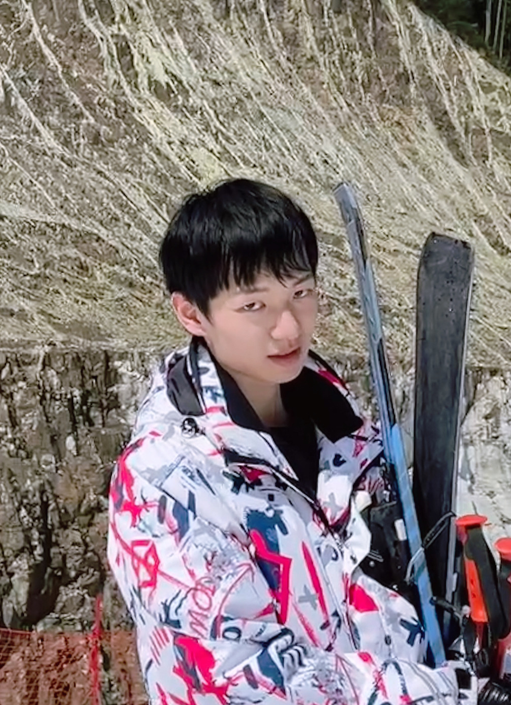

Zhuo Chen (陈卓)Ph.D. StudentZJUKG-Lab College of Computer Science and Technology Zhejiang University Email: zhuo.chen@zju.edu.cn [Google Scholar] [DBLP] [GitHub] |
 |
Short Bio
I am now a third-year (2020-) Ph.D. student in Computer Science at Zhejiang University, supervised by Prof. Huajun Chen. My research interests lie broadly in knowledge graphs (KGs), especially in KG-driven Multi-modal Learning, Low-resource Learning, and AI4Science. Currently, my research focuses on exploring the integration of knowledge into Multi-modal Learning, or incorporating Multi-modal Learning into the representation of knowledge. This exciting area of research holds great potential for advancing our understanding of how KGs can be leveraged to enhance Multi-modal Learning, and vice versa.
Preprints
- Revisit and Outstrip Entity Alignment: A Perspective of Generative Models Lingbing Guo, Zhuo Chen, Jiaoyan Chen, Huajun Chen [arXiv]
- Newton-Cotes Graph Neural Networks: On the Time Evolution of Dynamic Systems Lingbing Guo, Weiqing Wang, Zhuo Chen, Ningyu Zhang, Zequn Sun, Yixuan Lai, Qiang Zhang, Huajun Chen [arXiv]
- Molecular Language Model as Multi-task Generator Yin Fang, Ningyu Zhang, Zhuo Chen, Xiaohui Fan, Huajun Chen [arXiv][Project Page]
- MEAformer: Multi-modal Entity Alignment Transformer for Meta Modality Hybrid Zhuo Chen, Jiaoyan Chen, Wen Zhang, Lingbing Guo, Yin Fang, Yufeng Huang, Yichi Zhang, Yuxia Geng, Jeff Z Pan, Wenting Song, Huajun Chen [arXiv][Project Page]
- Aspect-based Sentiment Classification with Sequential Cross-modal Semantic Graph Yufeng Huang, Zhuo Chen, Wen Zhang, Jiaoyan Chen, Jeff Z. Pan, Zhen Yao, Yujie Xie, Huajun Chen [arXiv]
- Structure-CLIP: Enhance Multi-modal Language Representations with Structure Knowledge Yufeng Huang, Jiji Tang, Zhuo Chen, Rongsheng Zhang, Xinfeng Zhang, Weijie Chen, Zeng Zhao, Tangjie Lv, Zhipeng Hu, Wen Zhang [arXiv]
- Knowledge-informed Molecular Learning: A Survey on Paradigm Transfer Yin Fang, Qiang Zhang, Zhuo Chen, Xiaohui Fan, Huajun Chen [arXiv]
- Generative Adversarial Zero-shot Learning via Knowledge Graphs Yuxia Geng, Jiaoyan Chen, Zhuo Chen, Zhiquan Ye, Zonggang Yuan, Yantao Jia, Huajun Chen [arXiv][Project Page]
Publications
- Zero-shot and Few-shot Learning with Knowledge Graphs: A Comprehensive Survey Jiaoyan Chen, Yuxia Geng, Zhuo Chen, Jeff Z. Pan, Yuan He, Wen Zhang, Ian Horrocks, Huajun Chen Proceedings of the IEEE (IF=14.91) [arXiv]
- Knowledge Graph-enhanced Molecular Contrastive Learning with Functional Prompt Yin Fang, Qiang Zhang, Ningyu Zhang, Zhuo Chen, Xiang Zhuang, Xin Shao, Xiaohui Fan, Huajun Chen Nature Machine Intelligence (IF=25.90) [paper][Project Page]
- Tele-Knowledge Pre-training for Fault Analysis Zhuo Chen, Wen Zhang, Yufeng Huang, Mingyang Chen, Yuxia Geng, Hongtao Yu, Zhen Bi, Yichi Zhang, Zhen Yao, Wenting Song, Xinliang Wu, Yi Yang, Mingyi Chen, Zhaoyang Lian, Yingying Li, Lei Cheng, Huajun Chen ICDE 2023 [arXiv][Project Page]
- DUET: Cross-modal Semantic Grounding for Contrastive Zero-shot Learning Zhuo Chen, Yufeng Huang, Jiaoyan Chen, Yuxia Geng, Wen Zhang, Yin Fang, Jeff Z Pan, Huajun Chen AAAI 2023 (Oral) [arXiv][Project Page]
- Benchmarking Knowledge-driven Zero-shot Learning Yuxia Geng, Jiaoyan Chen, Xiang Zhuang, Zhuo Chen, Jeff Z Pan, Juan Li, Zonggang Yuan, Huajun Chen Journal of Web Semantics [paper][arXiv][Project Page]
- De Novo Analysis of Bulk RNA-seq Data at Spatially Resolved Single-cell Resolution Jie Liao*, Jingyang Qian*, Yin Fang*, Zhuo Chen*, Xiang Zhuang*, Ningyu Zhang, Xin Shao, Yining Hu, Penghui Yang, Junyun Cheng, Yang Hu, Lingqi Yu, Haihong Yang, Jinlu Zhang, Xiaoyan Lu, Li Shao, Dan Wu, Yue Gao, Huajun Chen, Xiaohui Fan (* equal contribution) Nature Communications (Editors' Highlights, Top 25 in 2022) (IF=17.69) [paper][Project Page]
- Disentangled Ontology Embedding for Zero-shot Learning Yuxia Geng, Jiaoyan Chen, Wen Zhang, Yajing Xu, Zhuo Chen, Jeff Z. Pan, Yufeng Huang, Feiyu Xiong, Huajun Chen SIGKDD 2022 [paper][arXiv][Project Page]
- LaKo: Knowledge-driven Visual Question Answering via Late Knowledge-to-Text Injection Zhuo Chen, Yufeng Huang, Jiaoyan Chen, Yuxia Geng, Yin Fang, Jeff Pan, Ningyu Zhang, Wen Zhang IJCKG 2022 (Best Application Paper) [paper][arXiv][Project Page]
- Molecular Contrastive Learning with Chemical Element Knowledge Graph Yin Fang, Qiang Zhang, Haihong Yang, Xiang Zhuang, Shumin Deng, Wen Zhang, Ming Qin, Zhuo Chen, Xiaohui Fan, Huajun Chen AAAI 2022 [paper][Project Page]
- Construction of a Linked Data Set of COVID-19 Knowledge Graphs: Development and Applications Haofen Wang, Huifang Du, Guilin Qi, Huajun Chen, Wei Hu, Zhuo Chen JMIR 2022 [paper]
- OntoZSL: Ontology-enhanced Zero-shot Learning Yuxia Geng, Jiaoyan Chen, Zhuo Chen, Jeff Z Pan, Zhiquan Ye, Zonggang Yuan, Yantao Jia, Huajun Chen WWW 2021 [paper][arXiv][Project Page]
- Zero-shot Visual Question Answering Using Knowledge Graph Zhuo Chen, Jiaoyan Chen, Yuxia Geng, Jeff Z Pan, Zonggang Yuan, Huajun Chen ISWC 2021 [paper][arXiv][Project Page]
- Knowledge-aware Zero-shot Learning: Survey and Perspective Jiaoyan Chen, Yuxia Geng, Zhuo Chen, Ian Horrocks, Jeff Z Pan, Huajun Chen IJCAI 2021 (Survey) [arXiv]